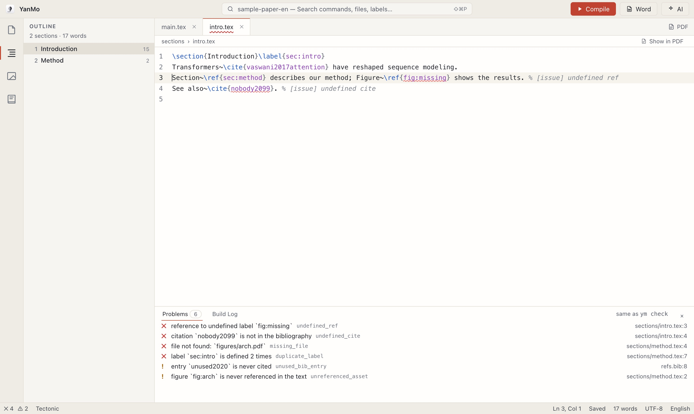

A local-first AI LaTeX workspace for papers
Write, compile and organize sections, figures and references in one desktop app. The AI only suggests; nothing goes into your paper until you approve it.

Open a paper and see its outline, word counts and every reference problem at a glance. Click a problem to jump to the line.
The installers include the Tectonic engine, so there is no separate TeX to install. Free and open source, no account needed.
xattr -cr /Applications/YanMo.app in Terminal.ym CLI, which lets Claude Code and other agents work on your paper (setup guide). Standalone CLI archives are on the Releases page.YanMo treats a paper as a project: sections, figures, references and build output are all at hand, and broken references are caught while you write.
A built-in Tectonic engine means no multi-gigabyte TeX distribution to install first, and an existing TeX Live works too. Start from a journal template, move projects to and from Overleaf, compile image-heavy papers faster in draft mode, and export to Word with Pandoc in one click.
Section structure parsed across files, with Chinese and English word counts kept separate. Drag a section to reorder it; subsections follow, and \input lines are adjusted for you.
Every figure, table and equation in one list: caption, label, how often it is referenced and whether the image file exists.
A searchable BibTeX library that flags entries cited but missing, never cited, or duplicated. Import by DOI, arXiv ID or straight from Zotero, and check in one click that every reference is real and correctly described.
Polish, translate, explain compile errors and fix citations. Bring your own key: Claude, any OpenAI-compatible API, or a local Ollama. Every change is shown as a diff and written only after you accept it.
The app, the command line and MCP share one command set. Run ym mcp and coding agents such as Claude Code can read the outline, run checks and compile the paper.
The problems panel in the editor and the command line run the same checks, so you can also put them in CI and catch mistakes before you submit.
$ ym check sections/intro.tex:3: error[undefined_ref] reference to undefined label `fig:missing` sections/intro.tex:4: error[undefined_cite] citation `nobody2099` is not in the bibliography sections/method.tex:4: error[missing_file] file not found: `figures/arch.pdf` sections/method.tex:7: error[duplicate_label] label `sec:intro` is defined 2 times refs.bib:8: warning[unused_bib_entry] entry `unused2020` is never cited sections/method.tex:2: warning[unreferenced_asset] figure `fig:arch` is never referenced in the text 4 errors, 2 warnings
Dual-licensed under MIT or Apache-2.0. All the code is public, and contributions are welcome.
A paper is plain .tex and .bib files in an ordinary folder. No lock-in: switch back to any other editor at any time.
YanMo never handles your keys or your paper. If you would rather stay offline, use a local model.
Chinese word counts, ctex templates and XeLaTeX defaults work out of the box.
Preview v0.4.0 is out. Here is what comes next.
A fault-tolerant LaTeX structure parser, a BibTeX parser and the ym check command line.
Editor, outline, figures, bibliography and problems panel, built on one command registry.
Built-in Tectonic, compile errors located in the source, two-way SyncTeX, Word export through Pandoc.
One-step DOI and arXiv import, images inserted automatically when dropped or pasted, figure thumbnails and numbering.
Bring your own key (Claude, DeepSeek, Ollama and others), polish and translate a selection, review a diff before anything is written.
Installers for macOS, Windows and Linux with the compile engine built in.
The interface, check results, error messages and command line switch between English and Chinese.
MCP server, drag-to-reorder sections, automatic updates.
Zotero integration, reference and AI citation checks, moving a section to its own file.
Journal templates, Overleaf import and export, a Settings window, stoppable builds and draft mode.
Equation previews on hover, AI review of the whole paper, a Git panel, signed and notarized installers.